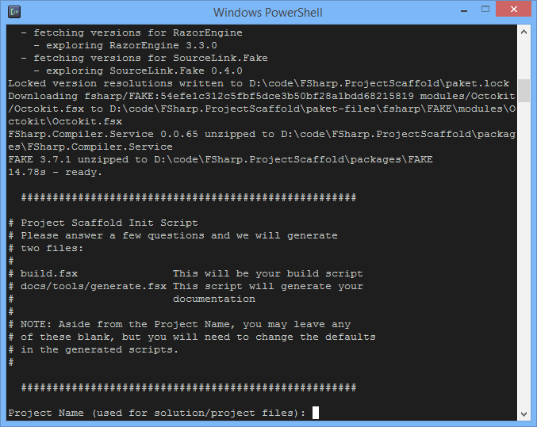

What is ProjectScaffold?
ProjectScaffold helps you get started with a new .NET/Mono project solution with everything needed for successful organising of code, tools and publishing.
We recommend you use ProjectScaffold for all new projects.
Tools include Paket for dependency management and FAKE for automating the build process.
Paket:
- helps manage NuGet packages
- can reference files directly with a URL from GitHub or from any where on the web
- gives precise and predictable control over referenced packages
FAKE:
- allows a simple one step release process
- works with most build servers
- compiles the application and runs all test projects
- synchronizes all
AssemblyInfofiles prior to compilation - generates SourceLinks
- generates API docs based on XML documentation tags
- generates documentation based on Markdown files
- generates and/or pushes NuGet packages
Getting Started
The first thing to do is to clone or copy the ProjectScaffold repository to your developer workspace. This will eventually be your solution folder. Feel free to rename ProjectScaffold folder to your liking.
Initializing
In order to generate your project first run:
1: 2: |
$ build.cmd // on windows $ build.sh // on mono |
This would prompt you to enter a name for your project solution, which is required, and then some more details which are optional:
- Project summary
- Project description
- Author's name for NuGet package
- Tags for NuGet package (separated by spaces)
- GitHub username
- GitHub project name (if different than project name from above)

During this initialization process project structure is generated and necessary packages and tools would be downloaded.
After the initialization has finished you can open, edit, build and test using ProjectName.sln.
Further topics
- Running builds
- Running tests
- Paket dependency management
- Writing docs
- Using build servers
- Release process
Contributing and copyright
The project is hosted on GitHub where you can report issues, fork the project and submit pull requests.
If you want to contribute to the documentation, please do so by doing a checkout of the docs branch of the repo.
The library is available under Public Domain license, which allows modification and redistribution for both commercial and non-commercial purposes. For more information see the License file in the GitHub repository.